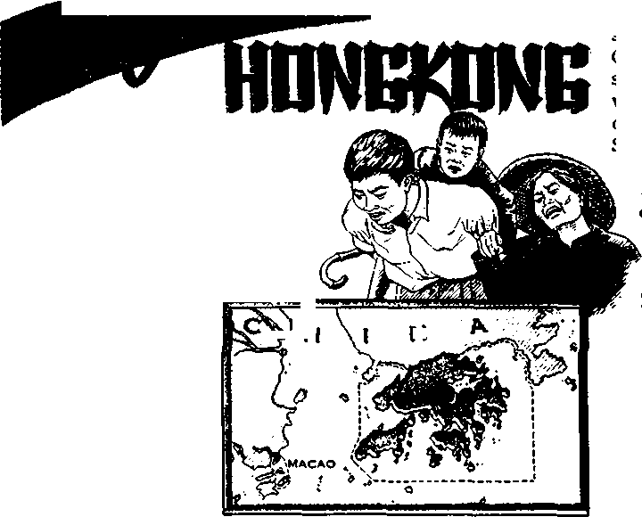

Salvation Depends unon What?
The Farmer’s Problem—Too Much Food
It Pays You to Know Your Insurance
Anguish in Hongkong
AUGUST 8, 1962
THE MISSION OP THIS JOURNAL
N«wi tourcM that are able to keep you awake to the vital Issues af our times must be unfettered by censorship and selfish Interests. “Awake!’1 has no fetters. It recognizes facts, faces facts, Is free to publish facts. It is not bound by political ambitions or obligations; It Is unhampered by advertisers whose toes must not be trodden on; It Is unprejudiced by traditional creeds, This journal keeps itself free that it may speak freely to you. But It does not abuse Its freedom. It maintains Integrity to truth.
“Awakel” uses the regular news channels, but Is not dependent on them. Its own correspondents are on all continents, In scores of nations. From the four corners of the earth their uncensored, on-the-scenes reports come to you through these columns. This journal's viewpoint Is not narrow, but is International. It is read in many notions, in many languages, by persons of all ages. Through its pages many fields of knowledge pass In review—government, commerce, religion, history, geography, science/social conditions, natural wonders—why, its coverage is as broad as the earth and'as high os the heavens.
“Awake!” pledges itself ta righteous principles, to exposing hidden foes and subtle dangers, to championing freedom for all, to comforting mourners and strengthening those disheartened by the failures of a delinquent world, reflecting sure hope for the establishment of a righteous New World.
Get acquainted with “Awake)” Keep awake by reading "Awake!”
publish kd Simultaneously in thb United States by ths WATCHTOWER BIBLE AND TRACT SOCIETY OF NEW YORK, INC. 117 Adams Street Brooklyn 1, N.Y,, U.S.A.
and in England by WATCH TOWER BIBLE AND TRACT SOCIETY
Watch Tower House, The Ridgeway N. H. Knorb. President
Printing thJa 3,800,000
“Awike!” I* publhteed In the followlsi 25 linimtti SI Dim urthly •-Aftlkartie, Cinyanja, Danish, Putch, Etlk-llah, Finnish, French, German. Greek, It&llxn, Japanese, Norwegian, Portuguese, Spanish. Swedish, TaifjilnR, Zulu. Monthly--Cebu-Vltayan. Chinese, Ilocanc, Korean, Malayalam, Polish. Tamil. Ukrainian.
Yearly subscription rales
Qfflees tor semimonthly editions
America, U.S., Adams St, Brooklyn 1, N.Y. $1 A astral I a, 11 Beresford Rd., Bluthfield, N.S.W. &/-Cauda, 150 Bridgeland Ayl., Toronto 19, (Hit, 11 Enilandt Watch Tower HtiUN,
The Ridgeway, London X.W, 7 T/-
New Zealand. 621 New North Rd.. Auckland. a.W. 17/-Seuth Af rias, Private Bag. Etandsfonteln, Tri. 70c Monthly editions cost half the above rates.
London N.W. 7. England Grant Suiter,
a oepy (AUtlMlIt, fid! South Africa, 3kit>)
RamittanoM for subscriptions should be sent to ths cflloe In yuur country. Otherwise send your remlttoncfl to London. Not Im of expiration la seat at least two tauea before subscription expires.
CHARGES OF ADDRESS shovld melt as thirty days before yoar savini late. Give as yuir old and new addrm (If possible, yaar eld adlreu label) < Watch Tetir, Watih Taw Hoe»e, The Rldpway, Lw don N.W. 7, Em land.
Entered as second-class matter at Brooklyn., N.Y. E*rtn Led In England
The Bible tranelatlen uud In “Awake!” h the New Werld Translation of the Holy Scrip tires, 1961 edition. When other translations ui used the following symbols wlH appear behind the citation*:
XiS - American Standard Version A'i’ - An American Translation AV' - Authorised Version (1611) Pd - J, N. Darby k version
Dy - Catholic Douay version EI? - The Emphatic Dlaglutt ZP -.Jewish Publication Boe. LiS - Isaac Leeser'8 version
Mo - James Moffatt's version /So — J. 8, Botbarham's version RS - Revised Standard VeMlon ?£ - Iflheft Youngs verdtfl
CONTENTS
The Farmer's Problem—Too Much Food 9 Who Said It First?
The Cougar—Curious Cat of the Americas 16
It Pays You to Know Your Insurance 20 The Moon and Meteors
“Your Word Is Truth”
SIMPLICITY and beauty are often considered rivals. But simplicity is no more synonymous with ugliness than style and costliness are with beauty. A thing can be simple in its design, yet thrillingly beautiful, or costly and unbecomingly ugly. How often we hear people speak of the simple designs of nature; still how unspeakably beautiful these are! Jesus Christ drew men’s attention to the simple beauty of the lilies of the field, then said that not even Solomon in all his glory was arrayed as one of these.—Matt. 6; 28, 29.
Simplicity is not drabness. Simple thoughts, simple words and simple pleasures are colorful and alive with beauty. They are like figurative streams running through the mind, turning it to what is fresh and lovely. For that reason one who allows his mind to dwell on the simple beauties of the earth finds a measure of tranquillity in his reflections. Contrary to opinion, the flat, colorless existence that denies everything bright and smiling is not simple but wretched.
What is simplicity? Does it betray itself with outward signs? Does it have habits, distinguishing tastes and Ways?
SIMPLICITY
Simplicity, some say, is unpretentious living, honestly being ————i onese;f( as a flower is a flower, a swallow a swallow and a rock a rock. Therefore, when a man of modest means lives as a man of modest means, it can be said that he appreciates simplicity. Such a person does not evaluate enjoyment in terms of material possessions, but he is aware of the higher virtues and true values: love, justice, truth, liberty and moral power in daily life. This man can see beauty in simplicity.
However, possession of riches does not mean that one has lost appreciation for simplicity. A rich man can be just as sincere and unaffected, just as appreciative of simple things, as others. On the other hand, a barefoot man may hate simplicity and dream of wealth, idleness and pleasure as the ideal way of life. The fact is, no one class of people has complete ownership of simplicity. In all walks of life there are some who live simply and. others who do not. Jesus Christ, the Son of God, said of himself: “Foxes have dens and birds of heaven have roosts, but the Son of man has nowhere to lay down his head.” (Matt. 8:20) His life was the very pinnacle of simplicity, but O how meaningful and beautiful a life it was!
Simplicity shows itself in many ways. Simple thoughts, for example, are mighty tools, ordering, strengthening and fashioning the very life of man. How much more becoming they are than the schemes of double-minded men! So the apostle Paul calls on men to think on things that are true, of serious con-cern, righteous, chaste and lovable, and to practice
COMING IN THE NEXT ISSUE
f The Emancipating Power of Truth.
• Under Southern Skies.
• Waging War Against Ruet.
Christian living, adding that the God of peace will be with them.—Phil. 4:8, 9.
Speech is the chief revelation of the mind. As the thoughts of the mind are, so the speech is. So if anyone thinks properly, the things he speaks and writes will also be upbuilding. Think justly; speak frankly. Say what you mean and mean what you say. “Just let your word Yes mean Yes, your No, No,” said Jesus. If you speak plainly and simply, you will be not only understood, but appreciated as well.—Matt. 5:37; 1 Cor. 2:1-5.
An appeal for simplicity of expression is not a vote for mediocrity, however. On the contrary, it is a plea to reach men whom the world forgets, to make oneself intelligible to all. It is a call to copy the language of the Bible, which is ingeniously wrapped in simplicity. Still nothing is as great or strong, as persuasive or beautiful as its truths. 1
As with thoughts and words, so with deeds. Usually it is the plain, simple things that we do that are appreciated the most In Jesus’ illustration of the sheep and goats, he shows that little things done on behalf of Christ’s brothers count for much before God. (Matt. 25:34-40) People often feel that they must do the big thing, otherwise their fine works will go unnoticed. But we should, do good to build up, not to show off. We should show hospitality, not to make people envious, but comfortable. We ought to give gifts, not to impress others with our generosity, but to express love and appreciation. We should dress neatly to please, not to attract undue attention to ourselves or to display our means of life. So instead of walking through life with our eyes fixed on the horizon, waiting to do the big thing, we all need to become aware of the myriads of little things that can be done to help the Lord’s poor and lowly ones. Serve their simple needs and you will reap a reward.—Acts 20:35.
Another thing, material possessions need not always be elaborate to satisfy. The simple homes and diet of many people have not changed for many centuries, still many of these people are very happy with their lot in life. Paul tells us: “To be sure, it is a means of great gain, this godly devotion along with self-sufficiency. For we have brought nothing into the world, and neither can we carry anything out So, having sustenance and covering, we shall be content with these things.” (1 Tim. 6:6-8) Once men depart from simple, natural living, then complications arise. Health fails and gaiety vanishes. People who lead simple lives are the happier for it.
Pleasure and simplicity are two old acquaintances. Watch children at play and you will see that it is the simple things that make them the happiest. Adults, too, often find the deepest pleasure in the simple things. Where life is simple and sane, true pleasure accompanies it just as fragrance does the uncultivated flower.
Riches and elegance may not be in the power of all, but simplicity, goodness and straightforwardness are. There is beauty in such simplicity.
some stress belief;
others stress works.
What does the Bible show?
ii'VT' OU exercise faith in him and are ■ greatly rejoicing with an unspeakable and glorified joy, as you receive the end of your faith, the salvation of your souls.” (1 Pet. 1:8, 9) Those words of the apostle Peter about faith in Jesus Christ link salvation with faith. Does salvation, then, depend upon faith? What about works? Are they necessary? Or is just believing in one’s heart enough?
That the Scriptures stress the importance of faith there is no doubt. Faith is of paramount importance and indispensable to salvation. “According to your faith let it happen to you,” Jesus said on one occasion. “We have been declared righteous as a result of faith,” wrote Paul under inspiration, and he also said: “Without faith it is impossible to please him well, for he that approaches God must believe that he is and that he becomes the rewarder of those earnestly seeking him.”—Matt. 9:29; Rom. 5:1; Heb. 11:6.
What is faith? According to the latest edition of Webster’s unabridged dictionary, it is “the act or state of wholeheartedly and steadfastly believing in the existence, power, and benevolence of a supreme being, of having confidence in his providential care, and being loyal to his will as revealed or believed in.” A common definition among Bible students is that faith is knowledge and understanding of God’s Word together with a confident reliance upon it.
As defined in
the Scriptures, “faith is the assured expectation of things hoped for, the evident demonstration of realities though not beheld.”—Heb. 11:1.
Faith relates to things unseen, either because of being things hoped for and so yet in the future or because of being by their very nature invisible. Note that faith itself is said to be the evident demonstration, the conviction of realities not beheld.
A live faith has works that verify or express that faith; otherwise the claim to have faith is an idle one and such faith is dead. To illustrate: If anyone really believed that smoking cigarettes causes cancer, would he continue to smoke them? Or if anyone lived in the path of a coming hurricane, would he do nothing about the warning if he really believed it? In each instance his works would show that he really believed.
So also with regard to having faith in God’s Word. If one truly has faith, he will prove it by works. Note how clear the disciple James makes this point:
“You believe there is one God, do you? You are doing quite well. And yet the demons believe and shudder. But do you care to know, O empty man, that faith apart from works is inactive? Was not Abraham our father declared righteous by works after he had offered up Isaac his son upon the altar? You behold that his faith worked along with his works and by his works his faith was perfected, and the scripture was fulfilled which says: ‘Abraham put faith in Jehovah, and it was counted to him as righteousness,’ and he came to be called ‘Jehovah’s friend.’ You see that a man is to be declared righteous by works, and not by faith alone. In the same manner was not also Rahab the harlot declared righteous by works, after she had received the messengers hospitably and sent them out by another way? Indeed, as the body without breath is dead, so also faith without works is dead.”—Jas. 2:19-26.
Who wants a dead faith? It does not accomplish anything in life. It does not further God's purpose; it brings no blessings from God and cannot lead to salvation.
But a live faith—how different! It moves ' one to action and it expresses itself in works. That is what Abraham had. James shows that he was indeed counted righteous because of his faith, but “by his works his faith was perfected.”
What kind of works? James here is not talking about the works of the law of Moses, which “Law of commandments consisting in decrees” God abolished through Jesus Christ. (Eph. 2:15; Gal. 4:4, 5) Abraham lived before the Law was inaugurated, and Rahab was a Canaanite, not under the law of Moses. Their faith produced proper works, giving proof of their faith.
So with those who would gain everlasting life in God’s new world: Mere belief is not enough, because God does not take our faith for granted. Only after Abraham perfected his faith by works did God count it to him as righteousness. God did not take Abraham’s faith for granted. God put his faith to the test. (Gen. 22:1) Only after Abraham’s faith was demonstrated by works to be genuine did God say: “Now I do know that you are God-fearing in that you have not withheld your son, your only one, from me.”—Gen. 22:12.
The Christian’s faith needs to be a live faith, as was Abraham’s, so that when God tests it, it will prove itself genuine, as having vitality. So we should always keep in mind the point that James so forcefully makes: That lack of works is proof that one’s faith is a dead one, destitute of vitality, and is thus to be compared to a body that is dead.
By stressing the need for works to perfect one's faith, James was not arguing against real and genuine faith nor against its importance in justification. But he was warning against any supposition that mere mental assent was all that was necessary for salvation. He was telling Christians that merely saying, “I believe,” is not enough, unless that belief is translated into true faith. Saying, “I believe,” of course, is necessary, and it puts one on the way to salvation; but if there is genuine faith it will always be accompanied by good works.
But now what of the works that the apostle Paul said were not necessary for salvation? Said Paul: “By works of law no flesh will be declared righteous before him, for by law is the accurate knowledge of sin." (Rom. 3:20) Such works were those of the law of Moses, and such were the works that the Jews in the apostle’s day were great on. But those works were no expression of faith, because they rejected the Lord Jesus Christ. They put no belief, no faith in him as the One God raised from.the dead and through whom “is the end of the Law.” (Rom. 10:4) So what did they have? They had only works without faith. This could not lead to salva-don. In discussing the fact that mere works of the Law will not save anyone Paul wrote:
“We reckon that a man is declared righteous by faith apart from works of law. Now to the man that works the pay is counted, not as an undeserved kindness, but as a debt. On the other hand, to the man that does not work but puts faith in him who declares the ungodly one righteous, his faith is counted as righteousness.” —Rom. 3:28; 4:4, 5.
Paul shows here that it is impossible to be declared righteous by works of the Law, for it demanded perfect obedience. If a man could perfectly keep the Law, he would be entitled to righteousness. A worker is entitled to what he has worked for, his pay; he expects his wages as a right, and payment of them is no gift or special kindness. To pay a man who has perfectly fulfilled the terms of a contract is not a matter of undeserved kindness. So if a man could be declared righteous by his works under the law of Moses, then it would be a matter due him. But since no man could keep the law of Moses perfectly, no man could gain righteousness by works alone. The only way to gain righteousness, then, would be by God’s undeserved kindness through Jesus Christ. Under this arrangement sinners could gain righteousness without works of law; faith in Jesus Christ would be the determining factor. Under this arrangement undeserved kindness is emphasized, for all are sinners and deserve no favor. “Now if it is by undeserved kindness, it is no longer due to works; otherwise, the undeserved kindness no longer proves to be undeserved kindness.” All this magnifies the Importance of faith: “A man is declared righteous, not due to works of law, but only through faith toward Christ Jesus.”—Rom. 11:6; Gal. 2:16.
Both Paul and James make it clear that salvation depends upon faith. Both inspired writers also show that this faith that leads to salvation must not be a dead faith but one that is alive, one- proved by works. In the book of Romans, in which Paul so often stresses faith, he also shows how to perfect that faith so that it will lead to salvation:
“If you publicly declare that ‘word in your own mouth,’ that Jesus is Lord, and exercise faith in your heart that God raised him up from the dead, you will be saved. For with the heart one exercises faith for righteousness, but with the mouth one makes public declaration for salvation.”—Rom. 10:9, 10.
To have true faith, then, requires that the heart and mouth work together. It is not just a matter of believing in the heart, but also a matter of publicly declaring that word in one’s own mouth, making “public declaration for salvation.” If one does not make public declaration of what is in his heart, then his faith is dead, inactive, like a body without breath.
From his own example and from his constant exhortations and declarations1 Paul showed that good works must perfect Christian faith. In fact, Paul’s entire eleventh chapter of Hebrews may be said to be an argument showing that works must accompany faith, for how does he prove that those faithful men of old had faith? Merely by citing their beliefs? No, but by relating what they did so as to prove their faith: “Abel offered God a sacrifice of greater worth than Cain.” “Noah . . . constructed an ark,” “Abraham, when he was called, obeyed,” and “offered up Isaac.” Yes, such men as Gideon, Barak, Samson, Jephthah, David and Samuel, not merely believed, but “through faith defeated kingdoms in conflict, effected righteousness, obtained promises, . . . became valiant in war, routed the armies of foreigners,” and so forth.
We cannot escape it: where there is faith, a live faith, there are works; otherwise one’s faith is dead. This same principle may be said to underlie Jesus’ illustration about the wise man who built his house upon a rock-mass and the foolish man who built his house upon the sand. The wise man had a live faith; upon hearing and believing he acted upon what he heard. The foolish man had a dead faith, if he actually did believe, for he did nothing about what he heard.—Matt. 7:24-27.
The works by which Christians prove their faith today mainly involve using their mouths to make public declaration for salvation. The apostle Paul recognized this responsibility, as did also the other early Christians. Those who were scattered abroad “went through the land declaring the good news of the word.” Paul taught both “publicly and from house to house.” In fact, he felt so strongly about his obligation to preach that he said: “Woe is me if I did not declare the good news!” That this commission was not merely for overseers of the Christian congregation is made clear from Paul’s further words to the whole congregation: “Become imitators of me, even as I am of Christ.”—Acts 8:4; 20:20; 1 Cor. 9:16; 11:1.
So it would be folly to think that belief alone is necessary for salvation. Such a view betrays an immature understanding of God’s Word, one that is concerned solely with receiving. But the pure worship of God is concerned not primarily with receiving but with giving. So it must be with Christians today. They are not content with merely believing, with merely giving mental assent, and so with merely having a dead faith. They witness to God’s name and kingdom, not alone so as to gain salvation, but primarily out of love for their heavenly Father. They want to share the good news of God’s kingdom as well as warn all about the coming destruction at Armageddon.
Not that this sharing of the good news of God’s kingdom is the sum total of God’s requirement for Christians. No, for they have obligations to study God’s Word, to associate with other Christians, to pray and to watch their conduct. No amount of preaching God’s kingdom will excuse immorality and unchristian conduct. Christians who have true faith will dignify what they preach by righteous lives.
So salvation depends upon what? Works of the Law? No. Mere mental assent or a dead faith? No, but salvation depends upon a living faith, a faith that perfects itself by works, the works of sharing the good news of God’s kingdom by Jesus Christ, making public declaration for salvation, and not overlooking the need for consistent private Christian conduct. By having faith with such vitality you will receive “the end of your faith, the salvation of your souls.”—1 Pet. 1:9.
PWODTVING KINGDOM FRtITX
* Obeying Jesus1 command to preach the good news of the Kingdom in all the inhabited earth, one of Jehovah’s witnesses was engaged in the distribution of the Watchtower and Awake! magazines in a public square in Manaus, Amazonas. Noticing the profound interest in God’s Word shown by a lady who took the magazines, the Witness arranged for a free Bible study at her house. As a result of this, eleven members of her family also participate today in the preaching of the good news of the Kingdom.
The Farmer’
Problem
WITH more than a billion people in want of food and farmers in a number of lands plagued with too much food, we have one of strange paradoxes of-this modern simplesolution
Ip be theshfp-'-pmg of food surplusee toarcas where there ■ is a shortage, but that is not the an-swer to the farm problem. Being an economic problem, it is so complex that a satisfactory solution seems difficult to find.
In the countries where farm production is a problem certain types of farm products frequently exceed the demand for them. On a free market, where the price of a product fluctuates according to the demand for it and the available supply, a farmer can be hurt by an overabundant crop that brings the price down to where he may not be able to meet his costs. Unlike a manufacturer who can exercise a relatively high degree of control over the prices of his products and over the quantity produced for the market, a farmer cannot. What he produces is like a drop of water in a lake. It has little effect on the market price or on the total amount put up for sale. He is only one person in thousands or perhaps a million or more farmers.
A very low market price resulting from too big a harvest can ruin him economi-caHy,and that can affect the economy of an entire nation. Even In industrial nations farmers make up a large portion of the population. In the United States the farmers make up about 12 percent of the population. European countries have a higher proportion, ranging from 20 to 55 pertent. Loss of purchasing power by such a large segment of a nation is certain to be damaging to the whole economy. The many nonfarmers who derive a substantial part of their income from sales of merchandise to farmers would likewise be ruined economically. Since farming is usually the largest single industry in a nation, the prosperity of farmers is of keen concern to the whole nation.
Certain governments have tried to protect farm income from the devastating effect of severe price drops caused by overproduction. One of their instruments has been price supports. The British government, for example, guarantees British farmers minimum prices for basic agricultural products. When market prices drop below these guaranteed prices, it makes deficiency payments to the farmers. This is the difference between the realized price and the guaranteed price. Nearly every country in Europe has an arrangement whereby farmers are given some form of price protection. Some forms of it might eveh be considered as government subsidies. The object is to ensure farmers a standard of living that is comparable to that enjoyed by the rest of the people in a country.
Arguing in favor of government price supports, the United States secretary of agriculture, Orville L. Freeman, said: “In the absence of any kind of Government programs to work with and supplement a normal farm distribution, it is estimated that, in five to six years, prices would drop in the neighborhood of 30 to 50 percent. Now, I think this would mean economic catastrophe, as well as great social and human loss for the whole country.”
Various programs have been instituted by the United States during the past twenty years to assist farmers to maintain a satisfactory level of Income. These have included parity payments, commodity loans, conservation payments, and so forth. Parity is the ratio between the prices that farmers received for their products during the period from 1909 to 1914 and the prices that they paid for the things that they bought, such as manufactured goods, fertilizers, and so forth. Farm and nonfarm prices during this period have been considered to have been in proper relationship with each other. A parity payment therefore would be the amount a farmer would receive from the government that would restore this relationship when the market price of his crop is low.
Price-support loans have been made in the United States since 1933 by the Commodity Credit Corporation. A wheat farmer, for example, can receive a loan on his crop that he puts up as security. If he succeeds in selling his crop above the government loan value, he repays the loan with interest. On the other hand, if he fails to get a price above that rate he can let the Government take the wheat, and the interest on the loan is canceled. This arrangement assures him a minimum income from his crop.
Overproduction has become the big headache for a number of governments. When the Belgian government helped dairymen by supporting milk prices at a high level, milk production was over-stimulated, and a government subsidy was required to convert the surplus into cheese and processed milk. Too much butter and hothouse grapes are also surplus problems for this country. Excess sugar beets and wine are the surplus problems in France. Germany has surpluses of high-cost rye. Austria is troubled with seasonal surpluses of butter and pigs. Switzerland struggles with too much butter, wine and potatoes. In Britain surplus potatoes are bought by the Government and sold for stock feed at much lower prices. In the United States huge amounts of surplus farm products have been obtained by the Government and stored away.
In 1961 the United States alone owned approximately 7 billion dollars’ worth of farm products. Its yearly storage bill for farm surpluses is about one billion dollars. In feed grains alone this government owned more at the beginning of 1961 than any other nation in history. What can be done with all this surplus food?
Great surpluses such as those possessed by the United States cannot be sold on the world market in quantities large enough to greatly reduce them without creating havoc with world prices. Other nations that sell similar farm products on the world market would be hurt economically and would have ill will toward the nation doing the selling. Free gifts of food can be made to needy nations, but this can be done only to a limited extent. Large amounts would endanger the livelihood of the farmers in those nations. It would also reduce the incentive of the people there to develop and increase their own agricultural productivity. Some of the food can be given to needy people within the country having the surplus, but this is only a small help because the amount they can eat is limited.
The inelasticity of demand for basic farm products contributes to the surplus problem. The amount of wheat, for example, that people eat cannot be measurably increased by lowering the price. The quantity they eat is controlled more by habit than by price. Another problem is that if the price is kept too high by Government price supports, consumption is likely to be reduced by the wheat’s being priced out of world markets. In either case, whether the price is low or high, the surplus problem remains.
When prices are low, farmers strive to increase production so their income will be adequate for meeting their expenses. On the other hand, if prices are high, they still strive to increase production out of a natural desire to take advantage of the high prices. In either instance overproduction stacks new surpluses upon old ones, creating a massive disposal problem.
In an effort to curtail overproduction of certain farm products, a government will often establish production quotas or acreage restrictions. This is done in the United States with respect to some grains, cotton and some other products. What farmers plant is watched closely by Federal agents, who will measure off the acreage planted to make sure the allotments have not been exceeded. If a farmer has exceeded his allotment, he is penalized with a fine that is proportionate to the amount he grew in excess of his allotment. A rice farmer in Arkansas, for example, who repeatedly exceeded his allotment was fined over $8,000 in 1958, over $17,-000 in 1959, more than $10,000 in 1960 and $25,000 in 1961. He purposely grew too much as a protest against Government control.
When a farmer grows more than the Government allows and is, perhaps, required to plow under the surplus, he may feel disturbed at this waste of food. On the other hand, another person may reason that since the surplus came about by his own disobedience to the Government, the Government has the right to enforce its decrees. Although the food is lost for use by humans or animals, it really is not completely wasted, because it enriches the soil by being plowed under the ground.
Sometimes a government will try to reduce overproduction by buying farm produce and then destroying it. Some farmers may feel that this is morally wrong, especially when it involves the slaughtering of surplus livestock such as pigs. Others may conclude that since the Government has purchased ownership of the animals and the crops, it has the right to do as it sees fit with what is its own. What position a person may take if he is called upon by the government to destroy such animals and crops is, of course, a matter for personal decision. Eliminating surpluses by reducing production is a much more desirable method. To a very limited degree this has been achieved by soil conservation plans.
Land that is taken out of soil-depleting crops and put into soil-building crops contributes to building up the fertility of the nation's farmland. It is not a waste of good land. In the long run the farmer is benefited, as his land is improved. Conservation plans have varied in the United States since 1933, when the Government began making payments to farmers who removed land from production.
Under one plan the Government paid rent to farmers for land they took out of use and devoted to soil conservation. They were not permitted to harvest any crop from this land or to use it for pasture. Occasionally entire farms were rented by the Government and retired from agricultural production. Usually the land was rented for periods of from three to fifteen years, during which time it was to be devoted to soil conservation. In 1960 approximately 28 million acres of cropland In the United States were taken out of production in this manner.
In the face of continued growth In surpluses, especially in feed grains such as com, the American government sought in 1961 to induce farmers to sign a contract to reduce their acreage in these crops. As an incentive to do this, the Government promised to pay the farmer 50 percent of the average yield he had been receiving from the land. By this plan the Government hoped to cut down overproduction. Although a person may have some misgivings about receiving payments for keeping land idle, he may find that he can justify it by recognizing that the Government is preventing him from working it and he is therefore entitled to reimbursement for the income he is losing. He might also take the view that the Government is paying him rent for the land and has the say as to how the land is to be used. What view he takes is, of course, a personal matter. But despite the various plans for reducing acreage, surpluses in some crops have continued to increase.
By applying the latest knowledge of farm technology, farmers have been able to increase production on reduced acreage. This has brought disappointing results to Government efforts to cut down costly surpluses. Instead of realizing a reduction in feed grains during 1961 of an expected one billion bushels, the United States saw less than half that reduction.
Caught in a price squeeze between rising costs and government restrictions, many farmers have felt compelled to increase production in order to meet their expenses. This is especially true of the small farmer who is hurt most by acreage control. Unlike the large farmer who can cut costs by dismissing hired laborers, increasing mechanization, and by diversifying, the small farmer is faced with many fixed costs.
Although farmers recognize the value of price supports, they chafe under growing government interference in their-freedom to operate their farms. Many are asking for less government interference and more freedom. This desire was expressed by the Farm Journal in its issue of February, 1962. It said: “We do not choose—and we do not believe most American farmers choose—to solve the surplus problem, which exists in only three or four commodities, by shoving farmers’ necks into the noose of rigid government control.” It has been estimated that 53 percent of American farmers would be happy to see the Government get out of farming. Some feel /that a gradual withdrawal by the Government, allowing the effect of supply and demand to be felt increasingly stronger in farming, would eventually reduce the economic problems of surpluses.
In the countries where farmers are faced with the problem of overproduction, persons who are not farmers should try to understand their economic problems. They should sympathize with farmers and recognize that they are entitled to a standard of living that is comparable to that of nonfarmers. Until a workable solution to the farm problem is found, farmers and nonfarmers will have to make the best of the food surpluses, being thankful that their problem is too much rather than too little food.
whose known
(1831) when he wrote, “A dark horse . . . rushed past the grandstand
in sweeping triumph,” In racing jargon a “dark horse” is one racing ability is un-and who sometimes
ERE you aware that the conversation we use each day is of
ten flavored with salty expressions that, in many cases, are centuries old? This is true no matter in
what land we may dwell. Not only
comes in first. .
In political circles in the United States
Who Said It FiUt?
that, but games and sports, cities, proverbs, vocations, the animal kingdom, romance, pins and the Bible, among other things, have furnished the basis for interesting expressions.
Many a descriptive word or phrase comes from sports and games. Take, for instance, the word “aboveboard.”
‘Sink* whila tha iron i> hot"
In 1608, one Joseph Hall stated in his book Virtues and Vices that “all his deal-fngs are square and above the boord,” This familiar phrase Hall de. rived from the rule that, when dealing cards, gamesters must keep hands above the board. Anyone who dropped his hands under the “boord” would not be playing “according to Hoyle,” the Englishman who codified rules on games in the early 1700’s.
Racing enthusiasts are familiar with the “dark horse,” The British statesman Benjamin Disraeli originated the phrase
"Killing two birdi with ona ilone"
a “dark horse” is a candidate who was not “in the running" (another racing phrase) before the convention but who unexpectedly is nominated when the’’' session becomes dead- ..NMdk .n a hayjtack,. locked.
As for cities, have you ever heard anyone say, “All roads lead to Rome”? This was coined in 1694 by Jean de La Fontaine, the French fableist. His words were “Tons ckemins vont a Rome.” Somehow the Italians must have agreed with him, for they began to quote him in their idiom, “Tutte le strode conducono d Roma”
Many occupational phrases have enriched the languages of the world. As an example, when someone says it “didn’t pan out,” he is indebted to the early gold miners in America who filled their pans with
"A dark bor*a"
water and gravel and sifted out grains of gold. If no gold was forthcoming, they said things “didn’t pan out," Thus the phrase has come to be associated with any plan or hope that has gone awry.
To “strike while the iron is hot” makes literal sense to the blacksmiths of the world who must heat their metals in order to shape them.
Thomas Fuller, an English writer (1732), drew upon the tailoring profession for his maxim, “A stich in time may save nine.” It indicates that “an ounce of prevention is worth a pound of cure.” '
All nations draw upon the animal kingdom for expressions. As far back as 570 B.C, men were saying, “Don’t count your chickens before they are hatched,” thanks to Aesop, the Greek fableist, The Hindus would say, “Don’t bargain for fish which are still in the water," while the Dutch would tell you, “Don’t cry ‘herrings’ until they are caught,” and the Italians, “Don’t reckon your eggs before they are laid."
Did anyone ever try to persuade you that “barking dogs never bite"? The French have been reiterating this proverb for over 700 years. But watch out! Many a nipped pedestrian belies the claim. It must be that Le Roux De Lincy (1250) wrote this proverb with his tongue in cheek.
Have you ever heard of a “snake in the grass"? It refers to any evil person who waits to pounce upon the innocent unaware. One must agree that the Latin poet Virgil (37 B.C.) certainly invented a most descriptive phrase.
Whenever we speak of “killing two birds with one stone,’’ we join the French: “Fai re d’une pierre faire deux coups.’1 To Latin-speaking persons, the birds become pigeons and the stone, a bean. (£’ be Ha cosa pigliar due Colombo con urn fava.) But the wary Scotsman still fells two dogs with one stone. One wonders if even Thomas Hobbes, the English philosopher who invented the adage (1656), could do the trick. Do you have a similar proverb in your country?
About 1616 the English jurist and author Sir John Davies wrote a book with a romantic title, “A Select Second Husband for Sir Thomas Overburie’s Wife.” In it he stated that “beauty’s but skin-deepe,” a truism still in use after 346 years.
An unknown constituent of Davies’ also said that “absence makes the heart grow fonder,” but who was the disagreeable wretch who first said, “Out of sight, out of mind”? It was Homer, the Greek poet (850 B.C.). This unsettling thought has greatly perturbed millions of lovers for many centuries.
When it comes to romance or any other field of endeavor, “Tell me what company you keep, and I’ll tell you what you are.” Cervantes, noted figure in Spanish literature, made this observation (1615) in his book Don Quixote. (Dime con quien andas, deeirte he quien eres.) Evidently the Germans thought it weil worth remembering, for they have been quoting it for centuries: “Sage mir, mit wem du umgehut, so sage ich dir wer du bist."
It is amazing how many expressions people use with the word “pin.” One who is very anxious or uneasy is “on pins and needles.” Someone may be trying to “pin it on you,” meaning that he wants to blame you for something; and people may carry “pin money.” The “pin money” was originally “given for girdle money,” according to the Greek historian Xenophon (390 B.C.), as the girdle was a sash worn around the loosely flowing togas of the day\ It eventually came to mean extra money used to buy “pins.” Today it is used in connection with a small amount of money set aside to buy extra things for one’s own use.
Mark Twain emphasized silence in Huckleberry Finn by noting that “you could have heard a pin fall.” Actually Mark Twain was the pen name of Samuel Clemens, noted American humorist. He got his pen name from the leadsman’s call on a Mississippi boat that he used to pilot. The leadsman would determine how deep the water was by dropping a weight with string attached into the water. His call “mark twain” meant two fathoms had been sounded.
The French, however, gave Mark Twain’s phrase their own distinctive flavor by saying, “On await entendu voter une mouche” (One could have heard a fly take wing.)
Before you start looking for a “needle in a haystack,” with Cicero the Roman orator (51 B.C.), let us consider some of the most ancient expressions of all.
A great number of phrases that many persons use today in many lands actually come directly from the Holy Bible, such as the words used by Cain after he murdered his brother Abel (c. 3895 B.C.): “Am I my brother’s keeper?”—Gen. 4:9, AV.
The name “Judas” is still an international symbol of a betrayer, because he gave Jesus a “kiss of death” and turned him over to his enemies who put him to death on a torture stake (A.D. 33). —Luke 22:47, 48.
Many Americans are familiar with the expression, “I’m from Missouri,” meaning that the person will not believe anything unless he sees it with his own eyes. But a much older expression is “doubting Thomas.” The apostle John recorded the account (c. A.D. 98) of the disciple Thomas, who, upon hearing that Jesus had been resurrected from the dead, refused to believe it: “Unless I see in his hands the print of the nails and stick my finger into the print of the nails and stick my hand into his side, I will certainly not believe.” (John 20:25) Jesus convinced Thomas.
An apt saying of Jesus’ is most valid today. “If the blind lead the blind, both shall fall into the ditch.” (Matt. 15:14, AV) Jesus used those words in referring to the religious leaders of his day and their followers. Used in modern speech, the phrase points out that, when someone who knows very little tries to lead another who knows nothing, the result can only be disastrous to both.
Not all expressions attributed to the Bible are authentic. For example, the term "Adam’s apple.” In 1687 the New England Primer explained it: “The apple which caused Adam’s fall has given its name to the protuberance in the front of the throat caused by the thyroid cartilage of the larynx, because a piece of the forbidden fruit is supposed to have stuck there— Adam’s apple.” Such is not backed up by the Bible, and the fruit Adam and Eve ate was not necessarily an apple.
Speech can indeed be colorful. You can draw on the past, on the animal world, yes, and even the Bible for the expressions you use.
Studies made by Dr. Clement S. Lear, of the Harvard School of Dental Medicine, reveal that the human adult swallows some 750 times a day. According to Dr. Lear, a man will swallow 7.6 times an hour during a full night’s sleep. In the course of a ten-minute eating period he will swallow 48 times; if sitting or reading he will swallow 34 times an hour, and while lying down, but not asleep, he swallows 31 times an hour.
gar” often appears in works of natural history.
haps obscuring the fact that the Americas have some big cats of their own. One of them is the cougar, about 160 pounds of curious cat Curious, for one reason, because it ranges from Hudson Bay to Cape Horn, the southernmost point of South America—a remarkable distance for any large wild animal.
Curious, too, is the fact that the sandy-colored cougar, often eight feet in length, is sometimes mistaken for a deer. In South America it is even called by some persons “false deer.” All this is to the big cat's advantage, since it may be mistaken by its intended victims for an animal of their own kind, enabling it to slip into their midst before its feline identity is disclosed.
Rather curious also are the many names this cat goes by. In the western part of the United States it may be called mountain lion. Some persons call it catamount, short for cat-a-mountain or cat of the mountain; and, indeed, timber-sloped mountainous areas are often the home of the cougar. The name "cougar” itself is an abbreviation from a native Brazilian name. Some persons call this cat “panther,” especially in Florida, where a few still live in wild swampy areas. English-speaking zoologists usually call the cat “puma,” ap-
Curiously, the cougar can outjump its African and Asian relatives. Jumping is something that comes naturally for this big cat. Lions and leopards can make a high jump of about eight feet, but the cougar finds it easy to make a high jump of twelve feet. Some authorities say they can spring from the earth and land in a tree twenty feet above. When it comes to the broad jump, the cougar is also one of nature’s champions. It can cover at least thirty-eight feet from a high point to the ground. One puma’s jump was measured in the snow, and it was almost forty feet. Another puma, jumping from a point twenty feet high, covered a distance of sixty feet. All this jumping is serious business to Mr. Cougar, for it helps in winning a living.
Sometimes cougars conceal themselves on a branch of a tree or on an overhanging ledge, waiting to leap down upon a passing animal. Pouncing upon their prey, they may break the neck of an animal with one sweep of their paw, death being instantaneous. Depending on where they live, cougars may make a meal of deer, wapiti, peccaries, skunks and even, on occasions, porcupines. The cougar apparently flips the porcupine over on its back and attacks the vulnerable underbelly.
When wild creatures are not readily available for its meals, the cougar, unfortunately, gets an appetite for cattle, sheep, horses and pigs. The big cat approaches soundlessly. Then this pussyfooting prowler gathers its feet under its body and humps its back, its taut muscles bursting into action. In a couple of jumping bounds the cougar is upon its victim. Because of this tendency to dine upon domestic animals, cougars in the past have been killed in great numbers. At one time in some places, such as British Columbia, Canada, bounties were paid for their destruction; but this policy has been changed, the government now maintaining twelve licensed hunters with trained dogs that are flown to any reported trouble spot in the province. “Systematic slaughter of these animals is not warranted,” firmly declares zoologist Ivan Sanderson, “and stockraisers can fairly easily eliminate confirmed marauders.”
In Argentina the puma sometimes misses what seems to be an easy meal. A local inhabitant of northern Argentina told a visitor that no puma could kill a donkey born in that region. He demonstrated. He tied a donkey to a tree. For two hours they watched; then suddenly the donkey doubled its legs and rolled over on its side. Mr. Puma had arrived for dinner. As it crept near the donkey to arrange for the menu, the donkey rolled over on its back and kicked wildly with all fours, crying loudly. The puma circled its potential dinner, which was presently upside down with hoofs flying in all directions. Disgusted, the puma finally slunk away, foiled by the donkey’s antics.
Considerable contention rages as to the cougar’s character and reputation. Probably no other big cat has more frequently been called a coward. In fact, one book on natural history states: “The Puma is the greatest coward of all the great or not so great cats.” The reason? Because the cat is noted for running from an encounter with man; and in South America some have been killed by men with knives, the animal not even putting up a fight to save its life.
It is true that the cougar almost always prefers to run when meeting men. Zoologist Ivan Sanderson says: “Despite voluminous fictional tales and innumerable accounts published as fact, the number of authenticated cases of deliberate attacks upon humans by these animals is so paltry as to be almost non-existent and most of these are open to some doubt.” Further, Dr. George G. Goodwin, associate curator of the Department of Mammals of the American Museum of Natural History, states: “Authentic accounts of attacks upon human beings by this big cat are scarce. It evinces considerable curiosity about people and their actions and will prowl about an abandoned camp or dwelling. But let somebody appear on the scene and the cougar moves off into the woods.”
However, it appears that when driven to desperation by hunger the cougar may go berserk and attack humans. Theodore Roosevelt wrote in Hunting Trips of a Ranchman: “When hungry, a cougar will attack anything it can master." In Canada there is a case of a cougar jumping into a trapper’s cabin; after a desperate struggle the trapper succeeded in killing the cat with a hunting knife. Yet the cougar is not a habitual man-killer.
When the cougar chooses to fight, the cat puts up a fierce battle. On one occasion a black bear out for a stroll happened to pass too near the cave of a puma with her young. The puma attacked. So violent was the struggle between bear and puma that both combatants rolled down the hillside and were found dead at the bottom, locked in a death embrace.
What happens when the cougar meets up with the jaguar, the most powerful of all American cats? A furious battle. The odds are in the spotted cat’s favor, since the jaguar, with its massive body and short, thick legs is more powerful than the fleet-footed cougar. Yet because of the cougar’s remarkable agility, it not infrequently triumphs over its superior opponent.
The cougar, says the volume American Wild Life, Illustrated, has acquired “an undeserved reputation for cowardice.”
The word “coward” implies a lack of courage and gives the cougar an odious reputation. Scripturally viewing the matter, we find that after' the flood of Noah’s day, Almighty God told Noah and his sons; “A fear of you and a terror of you will continue upon every living creature of the earth.” (Gen. 9:2) That is the natural instinct for wild animals. God put this terror in the animals for the protection of man. But since the time of Nimrod men have hunted wild beasts for mere sport and prestige purposes, and some animals have become man's enemies because the huntsmen have become their enemies. But when treated kindly from the time they are small they often react differently.
In Utah a forester raised a cougar from a kitten, and it was playful. When the forester returned home, the big cat made a pretense of hiding behind the chair. Tbe man played the game and would sit down to read his newspaper. With one bound the the huge cat would leap over the paper and land on his shoulder and nuzzle his head and neck in a friendly way. Because the cougar ripped rugs and scratched walls, it was finally put in a zoo. There it grew irritable and would not let any keeper get near it. One day, two years later, the forester visited the zoo. Warned that his former pet was now dangerous, the forester nonetheless went to the cage, opened the door and walked in. Onlookers were amazed to behold the cat jump on the forester’s shoulder, almost knocking him over and nuzzling his neck and face. The cougar had not forgotten its friend.
By whatever name you know this cat or in whatever country of the Americas you find it, the cougar is curious about people and curious in itself, a champion jumper among animals of the world.
“Clericalism is the pursuit of power, especially political power, by a religious hierarchy, carried on by secular methods and for purposes of social domination..,.
That great Spaniard, Salvador de Madariago, former professor of Spanish literature in the University of Oxford and the last President of the League of Nations, once wrote: 'Clericalism is an evil unknown to Protestart countries. It is a disease of Catholic societies.' And he added these significant words: ‘It is extremely difficult to attack clerical abuses without seeming to attack Catholic institutions,' that is, without being labeled a bigot. . . . Clericalism seeks to shape the policies of state, the composition of governmental departments, the expression of opinion, the appropriation of funds, the forms of entertainment,”—Dr. John A. Mackay, president of Princeton Theological Seminary.
■■ECAUSE of the willingness of Jehovah’s 1)1 witnesses to explain their work and be-U llefs, a number of them have been called to speak before various clubs and groups. Question-and-answer sessions usually follow.
CALLED to a club
A doctor in Portsmouth, Virginia, told a nurse, who is one of Jehovah's witnesses, that he belonged to a cluh and would like to have one of the Witnesses speak at their monthly meeting. She gave him the telephone number of the congregation servant. The doctor called and the Witness agreed to come and address their group, consisting of several medical doctors, a dentist, some contractors and other businessmen. The Witness spoke on who Jehovah’s witnesses are and what they believe. He talked forty-five minutes, after which he conducted a thirty-minute question-and-answer period. The questions asked were mainly on the resurrection and about the hope of everlasting life on the earth in God’s new world. Several took copies of The Watchtower and Awake! and the booklet Blood, Medicine and the Law of God. All in attendance appreciated seeing the 1958 convention report. A contractor said: *‘I want to hear more about the reconstruction work.” A doctor took some literature and later told one of his patients, who is a Witness, about the talk; he took a copy of the Paradise book from her. Another man said it was his first contact with the Witnesses since he was a boy back home and someone called with a phonograph to play a Bible lecture.
In Midland, Michigan, some of Jehovah’s witnesses were invited by a Presbyterian Club of both men and women to tell them about their work. After a thirty-minute talk, questions were asked for a half hour. One of their ministers was in attendance. To a question by a member as to why the Witnesses did not call their meeting place a church, the answer was given: “The term church as used in the Bihle has reference to a group of people who make up Christ’s body members.’' Then the minister spoke up and said, “The Witnesses are right; we are wrong in calling our building a church.’1 When the Witnesses were ready to leave, they handed the minister a number of the special issue of The Watchtower with the article “When All Nations
Unite Under God's Kingdom" to pas■ out to the club members.
CALLED TO A SUNOAY-SCHOOL CLASS
A Witness in Arkansas relates this experience: “I received a telephone call from an assistant to the teacher of a Presbyterian Sunday-school class, asking me to give them a talk on Jehovah’s witnesses. Each week they were inviting a different minister to give a talk on his religion. A forty-flve-minute talk was agreed on. I found a small group of about fifteen teen-agers, plus the Sunday-school teacher and his wife. We sat around a large table. The discussion was opened by my explaining that there are many gods and they all have names. Christ taught us to pray that the name of the true God be sanctified. I then explained who Jehovah is and how Christ made his name known, how God gives warnings during judgment periods and how the Witnesses preach what Christ taught Christians to pray for—God’s kingdom. Various publications used by Jehovah’s witnesses were displayed, including the 1958 convention report. A brief discussion regarding beliefs was given- The teen-agers showed much interest in the hope of living on earth in the new world. Armageddon also interested them."
CALLED TO A COLLEGE
A Witness in North Carolina had this experience: "One day the bookkeeper called me to the office and said she had a cousin going to Davidson College and that fie had to write a thesis on religion. He had material on every other religion but not on Jehovah’s witnesses. A few weeks later he came to my home, along with the professor of religion for the college. The assistant congregation servant and I talked for about three hours to them, and they wanted the books ’Your Will Be Done on Earth’ and Jehovah’s Witnesses in the Divine Purpose, About six months later, the professor called us to give a talk to the college group. Four Witnesses went and we talked for forty minutes and then answered questions for three hours afterward! Considerable literature was left, which is now in the college library. The professor said we would be remembered as the group that talked from the green Bible and really answered their questions."
for almost everything you can possibly think of. The big questions are, From whom is it wise to buy and what is it wise to buy? How can a buyer possibly evaluate or compare the offerings of the thousands of companies now selling insurance?
Quite naturally, if you decide to carry insurance,
INSURANCE authorities state that in the
United States a “reasonably adequate” insurance policy would cost a workingman about a fifth of his salary. Since that represents more money than the average family can afford, it is reasonable to conclude that most American families do not carry what the insurance companies consider to be “adequate insurance.” What many of these families have done, because of high insurance costs, is become more selective in their choice of insurance. They have chosen a few select policies that promise them the greatest protection at rates they can afford; then they hope for the best.
While there are only a few basic types of insurance contracts, there are, nevertheless, many varieties of policies on the market. These varieties are mainly a result of combinations and variations of special added features. Each type of policy is made to do a certain job or fit a certain situation. Each has its uses, its advantages and disadvantages.
There are numerous companies today selling insurance. In the United States alone there are now some 800 companies writing automobile insurance. In addition, there are companies that sell fire, windstorm, household liability, household theft, hospital and surgical insurance. There are also swarms of companies selling life insurance, disability insurance and insurance you want a company that will give you good service and will deal promptly with you, giving you the full amount to which you are entitled without needless legal maneuvering or a great loss of time on your part. So, then, while the price of the policy is an important factor, it is not everything. Quality and service are also recognized essentials. No one wants an insurance policy that is a meaningless scrap of paper, but that is what many get, because they do not know what they are buying.
The very fact that there are many bitter complaints about insurance companies being slow about fulfilling the terms of their contracts should be reason enough for caution. One of the greatest dangers is that of signing up with a take-all but do-nothing company. It is tragic to become involved with a company that will offer to pay too little, or will delay in settling a claim, or will demand so much of your time that you will be forced to agree to settle for considerably less than what would be a just and honest settlement.
Some insurance pitfalls can be avoided by doing business with reputable insurance companies and by being more aware of the dangers involved. So that you may be better informed on this subject, the following suggestions are made:
Do not let an insurance agent talk you into buying a policy you have not verified, do not understand or with which you are not completely satisfied. Never be in a hurry to sign your name to contracts, no matter how urgent the matter may appear to be. If an agent exerts pressure, that is a sure sign to go easy, to allow yourself time for second thoughts and a reexamination of the policy. Remember, haste makes waste.
If you are insurance bargain-hunting, you are apt to get stung. Instead of a bargain, the policy may turn out to be a first-class booby trap. Just because an insurance company advertises loud and long and promises you everything under the sun for a few pennies a day, that docs not mean you are being offered a bargain. The company may be a fraud or its policies not worth much more than the paper they arc written on. The false bargains are generally offered by out-of-state firms that you cannot sue. The reputable companies cannot offer cheap insurance. The best they can do is try to explain why insurance comes high.
Here are a few reasons why there are no insurance bargains today. Every year about 10,000,000 accidents of one kind or another occur on United States highways. Ten million accidents mean big garage bills, hospital bills and doctor bills. The present bill for medical expenses, property damage and loss of wages to survivors of automobile accidents alone runs between $5,000,000,000 to $7,000,000,000 a year! Each year that bill grows when an additional 300,000 accidents are added to the toll. By 1975 insurance companies envision an annual highway death toll of 55,000, an accident toll of 13,000,000 and an injury toll of 4,000,000, with an accident highway bill of more than $20,000,000,000! Now, do not make the mistake of believing that insurance companies are the ones paying this bill. The policyholders are the ones who must pay. That is why your auto insurance rates are high.
Another thing, the legal system in the United States appears to be dedicated to the idea that anyone who gets hurt is entitled to collect, regardless of who if anybody was to blame. A woman, for example, tripped over a garbage can in a dimly lit hallway. She sued the owner of the building and collected $221,000 for injuries suffered. When an auto backfired, a horse leaped and threw its rider. The ear driver was sued. The rider was awarded $150,000. Who pays these exorbitant bills? Not the insurance companies, you can be sure of that, but those who buy liability insurance. They pay for these bills in the increased cost of insurance.
There is still another reason for high costs. Wherever you find easy or big money there too you find a number of thieves. And the insurance business is no exception to the rule. Being considered an easy way to make money, it attracts corrupt elements all the more. A few questionable lawyers may unite with a couple of crooked doctors and garagemen, and the result is that insurance companies are swindled out of millions of dollars yearly. The dishonest garageman will inflate damage costs, the doctor will testify as to injuries suffered and the lawyer will plead the case before liberal juries and benign judges who are more and more inclined to give bigger and bigger awards. Corruption comes high, and who pay these bills? Policy owners. Just guarding against frauds costs the liability companies more than a million dollars a year. It is estimated that corruption and fraud have hiked insurance costs to twice the price buyers would have to pay normally.
Therefore, if anyone comes around selling cheap insurance policies—beware! Bargain days appear to be over.
First, do some insurance windowshopping on your own before you settle on any one company or policy. Compare prices and premiums. Check with your family, friends and neighbors. Find out what kind of insurance policies they have. Especially check with those who have entered claims. Ask if they were satisfied with the kind of service they received. If you live in the United States, check also with the Better Business Bureau, They will be able to tell you if the insurance company is sound. This is a free seivice and they can give good advice on what companies are reputable and with whom it is good to do business. You can also chock with your state insurance commission at your state capital. Do this BEFORE you purchase an insurance policy.
It is tricky business to buy insurance by mail. If you plan to do it, the least you can do is make sure that the company is licensed in the state in which you live. That will at least give you the protection of the state insurance commission. But you are safer by far to buy insurance through a local agent you know and trust, one who is prepared to give you good service.
Before you sign your name on the dotted line, be sure you fully understand what you are buying. One insurance broker said: “Most people don’t read their policies until it is too late. After an accident or a fire, the saddest line we hear is, ‘I thought I was protected.’ ” Not only think you are protected by your policy, know that you are.
Since insurance policies are anything but enjoyable reading, it may be necessary for you to ask your broker to explain the terms of your policy or have him summarize it in written language that you can understand, because so often insurance contracts are woven with legal jargon. And for your own ease and protection, read the contract yourself or have someone else read and explain its terms fully to you.
It is good to know, for example, if your auto insurance policy protects you against hit-and-run drivers, if it protects you against a driver who does not have his car insured. Docs your insurance do that? Are you sure? Does your insurance apply outside the country where you live? Most policies do not. Does your policy have a reduced rate for good drivers and for trained drivers ? Many states offer special low rates to drivers who are not accident-prone. Teen-agers who have graduated from an authorized driver-training school should let their company know that. There may be a 15-percent discount, and another discount if you have passed your nineteenth birthday. So it pays you to know your policy.
Some companies offer special rates or discounts to those who drive certain kinds of vehicles. If you drive a pickup truck primarily as a private car, let your insurance company know that. There are companies that give policies for almost 25 percent less on passenger pickup trucks than they do on autos. Also, you may be in line for a safety-belt discount, if your car is equipped with safety belts. So check. And, too, if you drive less than 7,500 miles a year, let your insurance agent know that. It may open up to you a policy in a lower price range, yet with the same protection. If you have more than one car, be sure to have them insured by the same company, because your second and third cars’ premiums can be discounted as much as 25 percent Why pay more when you can receive the same protection for less?
By shopping around and by reading policies thoroughly it may surprise you what different companies have to offer. You will find there is money to be saved in picking the right company and the right insurance combination. For example, some companies specialize in insuring people who do not drink alcoholic beverages. If you are a nondrinker, you may save up to 15 percent on a policy by doing business with such a company. There arc health insurance companies that will lower a policyholder's rates if his health has improved. Has your health improved since you have taken out a policy? Also, over the years some insurance rates do go down. You may be paying the higher old rate. Check to see.
By going over your policy you may discover that there are benefits that you were not aware of, such as medical and surgical bonuses. You may be in position to collect these now. On your auto Insurance policy you may find that you are entitled to suspension privileges. If your car is not to be used for thirty consecutive days or more, it may be that your liability and collision insurance can be suspended and the premium for the period of nonuse returned to you. However, check this closely, because in states where auto insurance is compulsory (New York, Massachusetts and North Carolina), license plates have to be returned to the State’s Bureau of Motor Vehicles while the insurance is suspended. This may be more of a bother than it is worth, although it may prove worthwhile if you are not going to use your car for long periods of time.
If there were a way to eliminate car accidents, the prices for both liability and collision insurance would no doubt drop sharply. If one could remove the swindlers and defrauders, that, too, no doubt, would lower costs. If man would behave properly, accident, health, theft and fire insurance would also undoubtedly be cut drastically. All of these huge "ifs’J would be fruitless dreams, if it were not for the fact that God has promised a new world for mankind.—2 Pet. 3:13.
The principle of insurance is risksharing, but God in his Word, the Bible, shows how he will eliminate all risks and thus do away with the need for insurance. Today even a snoozing dog is a potential time bomb, for one never knows when he will wake up and bite. God, however, tells us that he is going to conclude a covenant of peace with the animals, that they will not do ‘any harm or cause any ruin in all his holy mountain.’ (Isa. 11:7-9; Ezek. 34: 25) As for droughts, wind and rain damage, Jehovah assures man that the land will yield its increase and people will live on the soil in security. (Ezek. 34:26, 27) What about theft, health and life insurance? We are told that no thief, greedy person, drunkard or extortioner will inherit the kingdom of God; that God “will wipe out every tear from their [men's] eyes, and death will be no more, neither will mourning nor outcry nor pain be any more.” (1 Cor. 6:9, 10; Rev. 21:4) Thus the reasons for having insurance today will be done away with and mankind will live securely under the protection of God. Meanwhile, however, if you choose to carry insurance or if the law requires that you do, it will pay you to know both your insurance company and your insurance policy and know them well.
THE MOON AND METEORS
* The great English astronomer Sir James Jeans, in discussing the moon, stated that, conservatively, the moon is struck by one million meteors a day, some of the meteors ranging up to the size of cannonballs.— Target: Earth, page 18.
By "Awakel" correspondent in Hongkong
N
V H
IN A desperate attempt to get out of China, refugees by the thousands streamed toward the border of the British colony of Hongkong during the month of May. Many traveled five and six days to reach the border, where they waited until nightfall so they could sneak across unseen. Under the cover of darkness, they stumbled along remote mountain paths or waded across the Shumchun River and then crawled either over or under the twelvefoot, barbed-wire border fence. Others came by boat along the China coast, and still others swam across arms of the China Sea with the aid of inflated bladders. In just four weeks approximately 70,000 persons crossed illegally into Hongkong. The usual number is about 1,600 a month— most of these being smuggled in by junks from the Portuguese colony of Macao.
With Hongkong already gravely overcrowded by a bulging population of 3,250,000, officials felt that this flood of refugees could not be permitted. What made the situation even more critical was the water shortage being suffered by the colony. Because no rain of any account falls in the
winter the authorities have to keep a close watch on the amount of water drawn from the reservoir supp/y. The problem became so great after Communist China stopped supplying water to the colony from the Shumchun Dam, because of a water shortage on its side of the border, that the ration of water % had to be reduced to four hours a day. Because of these circumstances Hongkong officials did not feel they could open the doors to a large number of Chinese refugees.
As fast as the
refugees crossed the border they were rounded up and brought to the Fanling collection center. The Hongkong police were aided by Gurkha soldiers of the British army and by R.A.F. helicopters. From this collection center they were taken across the bridge at Lowu and returned to China.
Some Chinese residents in Hongkong lined the route to the border and encouraged refugees to leap from the trucks and to lose themselves in the crowd. Others even pushed their children in front of the trucks in an effort to stop them. On one occasion many booed the police when they forced the return of a wife and a sevenyear-old son of a Hongkong metalworker who had left China several years ago. Many of such attempts to reunite family members from China with those living in Hongkong were frustrated.
Despite weeping and pleading by the refugees, the police were firm. They and the soldiers helping them were patient and sympathetic but unyielding in carrying out their task.
Hunger was said by many to be the principal reason for this mass exodus. The acute shortage of food in China has caused many there to fear starvation later this year. The South China Sunday PostHerald of May 13, 1962, reported what two farmers, who had fled from a commune, told about their own situation. “They said their ration consisted of 17 catties of unhusked rice a month and, when husked, it would yield only about 12 catties of rice. There was little subsidiary food such as sweet potatoes and the like.” A catty is equivalent to 1.1023 pounds.
All together, six reasons were given by the refugees for fleeing. The South China Morning Post of May 12, 1962, listed them as follows: “(1) Serious drought has plagued the areas from where they came; (2) Acute shortage of fertiliser has caused paddy seedings in many areas to wither; (3) Food rations have been drastically reduced; (4) They have been allowed no time to cultivate their own private lots; (5) People in cities and county towns who emigrated there after 1949 are being forcibly evacuated to the farms; (6) The only place where conditions are much better is Hongkong, the closest non-Chinese territory from their homes.” Most of the refugees are farmers from the nearby province of Kwangtung and are in the eighteen-to-thirty age-group. Others are young factory workers and students.
Surprisingly, the Communist border guards made no effort to stop the refugees. Before the month of May they fired at anyone attempting to cross the border. Now they not only allowed the refugees to cross over unhindered but on occasions even helped them by showing them the paths that lead to the hills. At night they illuminated the paths with their lights.
After representations were made to the Chinese government by the British government, the flow of refugees slowed to a trickle. It appears that the Communists stopped the flood of refugees at the neighboring cities and villages. At the time of this writing the Communist border guards still seem to take no notice of the few refugees that continue to attempt a crossing into Hongkong.
Before the refugees were returned to China, the Hongkong authorities fed them and gave medical assistance to those who suffered injuries from their clandestine entrance into this British possession. The officials noted that all the refugees were hungry but none manifested signs of malnutrition. At the camp of the Police Training Contingent at Fanling they were fed with rice, cabbage and dried fish and then taken back to the border. On the way back some were tossed food packages by Hongkong residents as they sped by.
As refugees arrived in Hongkong many of them received assistance from relatives who met them at the border with a change of clothing and in some cases forged identity cards. Without their conspicuous peasant garb they became more difficult to detect. Further assistance from relatives enabled some to elude British border patrols and find their way into the city. There relatives hid them and provided them with jobs.
The Chinese have a strong sense of family responsibility and loyalty. They will do all they can to help even distant relatives. This is evident from the way they have been aiding refugee relatives as well as relatives still living in China. To those in China they send a steady stream of food packages. All over Hongkong Chinese stores display lists that itemize the costs and the quantities of food allowed in the packages. Peanuts and edible oil are the commodities in greatest demand. So great is the amount of money spent on these packages that the larger emporiums have reported a drop in business because the people have little money left over for other things.
Other countries in the Western world have observed this plight of Chinese refugees with sympathy, but all have been cautious in offering help due to immigration and economic problems that are involved. Canada expressed its willingness to provide food and relief for them and to open its borders to 100 families. Taiwan announced that it would give 1,000 metric tons of rice as emergency relief and accept 50,000 refugees despite the crowded conditions with which it already must contend. But it seems unlikely that this offer will give Hongkong immediate relief, due to the time required to screen the refugees and the cost to transport them to Taiwan.
The United States is already supplying food for about half a million refugees in Hongkong. In addition, it expressed willingness to make a token effort to relieve the crowded condition of the colony by accepting 5,000 skilled refugees without delay. These are to be chosen from a list of 19,000 applicants already living in Hongkong who have been waiting many years for visas to the United States. This will do little toward solving the problem in Hongkong, but it is a sizable increase from the yearly U.S. immigration quota of 105 for Chinese. Also, for approximately ten years the United States has been issuing nonquota immigrant visas to Chinese in an effort to minimize the separation of families. Last year 1,700 of such visas were issued.
Such limited offers to take Chinese immigrants will not reduce to any great extent the population problem in Hongkong, much less make it possible for the colony to open its borders to 70,000 refugees. The problem can to some extent be appreciated when it is noted that an estimated 10,000 to 20,000 refugees evaded detection in May. Add these to the natural population increase of 90,000 a year and it can readily be seen why the offers made by various countries will help Hongkong in only a small way.
The anguish of Hongkong is its refugee problem. The many Chinese residents of Hongkong are pained to see fellow Chinese, many of whom are relatives, being returned to China. The refugees are pained to be returned. And the Hongkong authorities are pained by having to send them back. It is a problem to which the nations, divided by political ideologies and moved by fear, have not found the answer.
'We Copied Higher-ups'
• In a news report telling how school supervisors admitted accepting $6,000 in graft, the New York fgjrror of June 23, 1961, said: “Two supervisors in the Board of Education’s Bureau of Construction yesterday admitted accepting money from school builders. One said he saw nothing in the practice since 'higher-ups' were doing it. . . . The witnesses’ attitude provoked Commissioner Grumet to observe; ‘The climate of ethics and morality is set at the very top. If people below find out the people on top are lax, they take their cue from the man on top.’ ’’
LONG before man was brought into existence the true God created a great host of spirit creatures. Some he used as messengers and they are, therefore, referred to in the Bible as angels, which means messengers. Oftentimes Jehovah used one of these spirit creatures to represent him on the earth. A noteworthy instance of this is at Mount Sinai when the law covenant was given to the Israelites.
After relating the fearful display of power that was manifested at Mount Sinai before the eyes of the assembled Israelites, the Scriptural record goes on to say: “So Jehovah came down upon Mount Sinai to the top of the mountain. Then Jehovah called Moses to the top of the mountain, and Moses went on up.” (Ex. 19:20) It would seem from this statement that the Supreme Sovereign left his heavenly realm and came down to Mount Sinai to give personally to Moses the law covenant. That this was not the case becomes evident from a further examination of the Scriptures.
The apostle Paul states that the law covenant was transmitted to man by means of angels. He points this out at Galatians 3:19: “Why, then, the Law? It was added to make transgressions manifest, until the seed should arrive to whom the promise had been made; and it was transmitted through angels by the hand of a mediator.” The same observation was made by the first Christian martyr, Stephen, who told the Jewish leaders that they had “received the Law as transmitted by angels” but had not kept it.—Acts 7:53; Heb. 2:2.
Jehovah’s presence at Mount Sinai was represented by an angelic messenger who acted as his official spokesman. Since the angel spoke what Jehovah had directed him to speak, it could be said that Jehovah himself was speaking to Moses. The father of Samson, Manoah, took this view when an angel spoke to him. The record says: “Then it was that Manoah knew that he had been Jehovah’s angel. Consequently Manoah said to his wife: ‘We shall positively die, because it is God that we have seen.’” (Judg. 13:21, 22) Manoah could say this because he had spoken with Jehovah’s angelic spokesman who represented Jehovah.
Another example that we can point to in which Jehovah himself was considered as speaking when in actual fact the spokesman was a representative is the instance when Elijah uttered a prophecy about Ahab and Ahab’s sons. When this prophecy was fulfilled, Jehu said, with regard to Ahab’s son Jehoram: "Lift him up; throw him into the tract of the field of Naboth the Jezreelite; for remember: I and you were riding teams behind Ahab his father, and Jehovah himself lifted up this pronouncement against him.” (2 Ki. 9:25) Because the prophecy was Jehovah’s, Jehu could say that Jehovah himself had uttered it. For the same reason it could be said that Jehovah spoke to Moses on Mount Sinai, although a representative angel did the speaking.
There was one particular spirit creature that Jehovah used as a special spokesman. The Bible calls him the Logos or Word for that reason. It soems reasonable to conclude that it was this special spokesman who represented Jehovah on Mount Sinai. This great prince would logically be instrumental in transmitting the law covenant. Undoubtedly he led the Israelites through the wilderness, punished them in the name of Jehovah for disobedience and disputed with the Devil over the body of Moses. Referring to him, Daniel 12:1 says: “'Michael will stand up, the great prince who is standing in behalf of the sons of your people." (Dan. 12:1) That great prince and chief representative of Jehovah would obviously be Jehovah’s only-begotten Son.
So when the Bible speaks of the two tablets of stone that were written on by God’s finger, we should not conclude that Jehovah himself did the direct writing. As it was his angelic spokesman who spoke with Moses, so it was this representative through whom the writing was done. The expression “finger of God” is used in the Bible to refer to Jehovah’s active force rather than to a literal finger. The same thought is found at Psalm 8:3, which says: “I see your heavens, the works of your fingers.” It was by God’s spirit that the heavens were made, not by literal fingers. They are merely used to represent his active force in a way that we can grasp, because fingers are the principal means by which a man writes and makes things.
There are only three occasions mentioned in the Bible when God appears not to have spoken through a representative spokesman. These occurred when his only-begotten Son was on earth as a man. The first occasion was when Jesus was baptized and a voice was heard from heaven saying: "This is my Son, the beloved, whom I have approved.” (Matt. 3:17) The second time was when Jehovah spoke at the transfiguration scene, mentioned at Matthew 17:5, and the third time was when Jesus was praying to his Father and a voice answered him from heaven, which is mentioned at John 12:28. Jehovah’s official spokesman was on earth then, and the circumstances make it appear that Jehovah himself did the speaking in these instances rather than a representative.
As Jehovah used his angelic representative to express his will for the Israelites at Mount Sinai and to carry out his purposes for these covenant people of his, so he used such a representative in the work of creating man in the beginning. In the record the Bible gives of creation it says that "God created the heavens and the earth.” (Gen. 1:1) That he did it through the Logos whom he used as a master workman is indicated at John 1:3, where it says: “All things came into existence through him.” Colossians 1:16 confirms this by saying: “By means of him all other things were created in the heavens and upon the earth.” He is the master worker who, speaking under the name of wisdom, states in Proverbs 8:23, 30: “From time indefinite I was installed, from the start, from times earlier than the earth. Then I came to be beside him as a master worker.”
Although Jehovah used his only-begotten Son as a master worker in the creating of all things, that does not mean Jehovah did nothing and that the Son was the creator. On the contrary, it was Jehovah who decided what was to be created and how it was to be done. He supplied the knowledge, the ability and the power to his Son for carrying out his purposes with respect to creation. We can make a comparison of this with the constructing of a building. The builders would be the owner, architect and contractor rather than the laborers who do the actual work. So it was with Jehovah. He was the Creator or Builder, although the Word did the actual work as he was directed by Jehovah.
By means of his angelic representatives, Jehovah has made his will known to man and has performed many marvelous works to the honor and glory of his great name. To him goes the praise and the credit for them all. “The glory and the might are his forever and ever.”—1 Pet. 4:11.
aNATCHINg , al ■ n b —v --
School Prayers
>$> On June 25 the United States Supreme Court ruled by a six-to-onc vote that the recital of an official prayer in New York public schools was unconstitutional, even though it was non-denominational. The prayer reads: “Almighty God, we acknowledge our dependence upon Thee, and we beg Thy blessing upon us, our parents, our teachers and our country.” The ruling will undoubtedly have widespread effect, as many public schools throughout the United States have religious ceremonies of one sort or another.
Survival Council
<i> On June 15 the first Congress of Scientists on Survival opened a three-day conference in New York city. Some 600 scientists were present to determine what scientists can do to help to preserve the peace and ensure human survival. The three-day session was described as "confused,” and it was said that the new council barely survived its birth.
Race to the Moon
<$> On June 19 two top space scientists suggested that the United States investigate the possibility of sending a man on a one-way trip to the moon. After landing he would remain until a means could be provided for his return to earth. This plan, it was said, might speed up a lunar landing by one and a half to two years. The present U.S. program is expected to soft land three men on the moon some time in 1970 and then return them to earth.
Own Homes Burned
Since June 8 members of the Sons of Freedom religious sect, a splinter group of the Doukhobors, have burned more than 100 of their own homes. This has been done by the women in protest to the jailing of their husbands for arson and destruction. The Sons of Freedom arc a group opposed to modern life and they have expressed their fanaticism by blowing up railroads, schools and power lines. This has gotten them into trouble with the Canadian authorities, who have jailed them for their misconduct, which, in turn, has precipitated the house burnings in protest.
Accused of Spying
■$> The Soviet newspaper Izvestia, of June 13, accused Jehovah's witnesses in Russia of spying for the United Slates government. It said that documents had been recovered that showed the ‘anti-popular espionage nature of the witnesses of Jehovah sect illegally operating in the Soviet Union on directives from the United States.' The charge is ridiculous. The Watch Tower Society had simply sent a questionnaire to its branch offices asking questions relative to the cost of living in those countries in order to establish a basis for the subscription cost to the Watchtower magazine. No questionnaire was sent to Russia, but one must have found its way to Moscow. It is interesting that in Western lands Jehovah’s witnesses, who remain absolutely neutral in affairs between worldly nations, are often accused of working for the Communists.
Plane Disasters
On June 22 an Air France Boeing 707 jet liner crashed into a hillside when attempting to land in a storm at Guadeloupe, in the West Indies. All 112 persons aboard were killed. It was the fifth Boeing 707 tragedy since February, 1961, and the third within a month. On May 22 all 45 passengers died when a Continental Airlines jet disintegrated in midair near Unionville, Mo., apparently the victim of sabotage. On June 3 another Air France Boeing 707 crashed on takeoff from Orly Airfield near Paris. The crash killed 130 persons, making it the worst single-plane tragedy in air history; the June 22 crash was the second-worst.
Was It a Meteor?
On May 28 a huge multicolored fireball streaked through the sky over Vancouver, British Columbia. It was thought to be a huge meteor, but some questioned whether it was. “It was not a meteor,” claimed U.S. customs official John Lium. "It had all the appearances of being powered. It passed overhead at about 400 feet but didn’t make a sound.” The Vancouver Sun. reported that it “broke up the Mounties-Portland baseball game at Capilano Stadium for about three minutes as fans and players scurried for shelter. . . . Downtown traffic slowed to a crawl as motorists craned their necks to see the object. An excited policeman radioed headquarters that an airliner was burning in the sky. Witnesses said it was blue, red, gold, and all the colors of the -ainbow. They jammed switchboards at police stations, newspaper offices, radio stations and military establishments with excited queries."
Jukeboxes Banned
On June 24 the Bangkok World reported that Premier Sarit Thanarat had banned jukeboxes in Bangkok. According to the newspaper, the premier believes jukebox music ‘‘tends to destroy the culture and traditions of the Thai people," and that youth wastes too much time listening to it.
Wanted to Be with Buddha
<$■ According to an AP report appearing in the Frankfurter Allgemeine newspaper of March 26, Wu Tschen, directress of a Buddhist monastery, let herself be burned to death on a funeral pyre she herself had prepared, because "she wanted to be with Buddha.”
Smoking and Heart Trouble
<$> On June 24 two medical researchers, Dr. Oscar Auerbach and Dr. E. Cuyler Hammond, said that cigarette smoking may be a major cause of heart trouble. “Changes resulting from inhalation of cigarette smoke place an added work load upon heart muscle and, in combination with the effects of carbon monoxide, reduce the supply of oxygen available to heart muscle,” Dr. Hammond said in a paper read to the American College of Chest Physicians, “At the same time," he continued, “nicotine in tobacco smoke causes a temporary increase in heart rate as well as constriction of peripheral arteries resulting in a temporary increase in systemic blood pressure.” A normal heart may withstand these harmful effects, Hammond said. However, he suggested that “such conditions can result in failure of the heart of a person whose coronary arteries are partially occluded by athero-sclerosis.’’
Evolution or God’s Word ?
Recently a new version of the Bible book of Genesis was published by Brian Pamplin, Durham University scientist and active member of the Church of England, to line up with the theory of evolution. According to Pamplin, “The whole idea of Adam and Eve won't fit in with evolution,” so the account concerning the garden of Eden was cut. He observed that the order of creation in Genesis chapter one is accurate hut that, according to evolution, the creation of man is not. His version therefore reads: "So man evolved, male and female, from the higher animals by the spirit of God.” How foolish man is to reject inspired Bihle truth for fanciful theories!
Japanese Shipbuilding
Japan is the world's largest exporter of ships, now supplying new ships to meet about 30 percent of the world's needs. She is constructing the world’s largest vessel, a 130,000-ton tanker, that will be about 955 feet long, 141 feet wide and 54 feet deep, ft is expected to be completed this year at Kyushu, in southern Japan.
Brutality to Children
<i> Wilson D. McKerrow, executive director of the Brooklyn Society for Prevention of Cruelty to Children, reported recently that brutality to children has experienced an upsurge since World War II. “1 used to say there is less physical abuse of children than formerly but I can’t say it any more,” declared McKerrow. "It’s become so serious,” he said, “that a Conference on the subject was held some weeks ago in Wash Ington, called by the U.S. Chil dren’S Bureau." blew York city's chief medical examiner, Dr. Milton Helpern, said that a child dies of violence in the home every week in New York city.
Birds Facing Extinction
<«> At the thirteenth world conference of the International Council for Bird Preservation. which met in New York city in June, it was reported that to day at least a dozen species of birds arc in danger of extinction in the United States, and more than 12o different kinds in some part of the world. It was pointed out that, whereas direct slaughter accounted for the extinction of such birds as the dodo, the great auk and the passenger pigeon, the destruction of the natural habitat of the birds is now becoming a more important factor in the declining numbers.
“Downright Lousy"
<$> In an article on preaching that appeared m The Christian. June 3,1962, G. Harold Roberts, among other things, reported: “At the Ministers' Institute the lecturer said that preachers preach poorly too much of the time—in fact, using expressive colloquialism, he said: ‘Much of the time our preaching is down right lousy!’ ”
Storm Changes Ocean Bottom
<$■ The storm that battered the Atlantic coastline from Long Island to South Carolina in March not only altered the coastline, but was also found to have changed the ocean bottom. It was discovered, for example, that an area around Cape Henlopen, Delaware, where the water was formerly forty feet deep, is now less than three feet deep. And part of Sinepuxent Channel in Maryland is now nineteen feet deep where the pre-storm depth was six feet.
Resources of the Deep
In the state of Virginia during the one month of April commercial fishermen landed 28,277,600 pounds of fish and shellfish and harvested 179,800 bushels of seed oysters. Toward the end of May one ship, the Northern Dawn, pulled into Prince Rupert, British Columbia, with a record North American halibut catch worth SGO,-000, The 182,000 pounds of halibut were caught in three weeks at sea.
Haven for Ex-Priests
According to ex-priest Herman Johannes Hegger, 46, who left the Catholic church in 1948, “a priest who wants to break with the Roman Catholic Church is helpless. He needs somebody, iust for the simple things in life, because he is actually left on the street without a penny and without a decent suit.” So, in June, Hegger opened a 17-room house in the village of Velp, near Arnhem, the Netherlands, to serve as a temporary shelter for ex-priests. It is the first of its kind in Europe. The only ones that will be barred from the home will be priests that are wanted by the police on criminal charges and those who have converted to communism.
Installment Buying
Breeds Crime
<$> A Frankfurter Rundfu-hau reporter, writing from Rome, dealt with the parallel between the living standard and the rise in crime. He said: "Installment plan buying. Inaugurated only in the last few years, found Italians psychologically unprepared. They have become intoxicated by a wealth of down payment purchases, and the courts are flooded with cases of broken contracts. Demands for payment, forfeitures and bankruptcy sales have taken on ‘tumultuous proportions’ and the list of cases and proceedings to be handled would fl]] the telephone book of a city of over a million inhabitants.”
In Honor of the Dead
<fc On June 13 it was reported that about thirty Japanese sanitation department officials in Nagoya, Japan, assembled to honor the souls of dead mosquitoes, flies, cockroaches and rats. Prayers in Their behalf were offered before an al tar by a Shinto priest. The sanitation officials then went out to determine how they could exterminate more of thorn
WE LIVE IN A
R/VZDED WORLD
BUT—
God has promised that it will not always be so. How it will change and what it will mean to all living persons is the heartwarming theme of the 32-page booklet
WHEN ALL NATIONS UNITE UNDER GOD’S KINGDOM
When you have read it you will want to share your new-found hope with your friends. Send for a supply of booklets today. They are 4d each (for Australia, 5d; for South Africa, 3ic), 3 for 8d (for Australia, lOd; for South Africa, 7c).
WATCH TOWER
THE RIDGEWAY
LONDON N.W, 7
I am enclosing................. Please send me..........triples ut the booklet. H'Afm A’aNons r’nife
tinder (JcmX'js Xintjftfom <4d each [for Australia, 5d: for South Africa, GVicl, 3 fur M [for Australia, lOd; for South Africa, 7c|j.
Name.......
Street, and Number or Route and Box ...
Postal
District No.
C minty
31
That is how the Bible describes itself
Why should this Book that highlights God’s mercy and the Christian quality of love be represented in the Bible as a weapon of destruction?
One reason is that God’s Word cuts through even to the secret thoughts of a man’s heart and motives. Besides, God’s thoughts and purposes are revealed in his Word, including his judgments in respect to man’s use of His name. And did you know that the Bible historically reports that a world ended because those living in that world profaned his name?
Today, God’s Word, like a two-edged sword_, is carving out a pattern of truth that is elevating God’s holy name to a position never before equaled in the history of man. But God’s judgments are to be found in this pattern of modern times too! Be sure of your position! Obtain and read
•‘LET YOUR NAME BE SANCTIFIED"
Mail the coupon below. Enclose only 3/6 (for Australia, 4/-; for South Africa, 35c).
WATCH TOWER THE RIDGEWAY LONDON N.W. 7
I am enclosing 3/6 (for Australia. 4/-; for South Africa. 35c). Please send me the book r‘Lot Your Vtw Be For mailing the coupon I am to receive free the booklet God's Way
7s Love.
Street and Number
Name ...................................................................................... or Route and Box ...........................................................
Post Postal
Town .................................................................................... District No. .. .. .... County ..............................................
Jn: AUSTRALIA addrean. 11 Beresford Rd , Strath field, N.SAV. CANADA; 1.’n Brklgetand Ave., Toronto 19, Ont. SOUTH AFRICA; Private Bag. Hunrlsfonteln, Trans vital. UNITED STATES: in Adams St., Brooklyn 1, N.Y,
32 A WA K E !
Such as Ephesians 2:10; 6:10-18; 2 Corinthians 916; Galatians 6:10; 1 Timothy 6:12, 17( Ifi; Titus 217; 3:8.